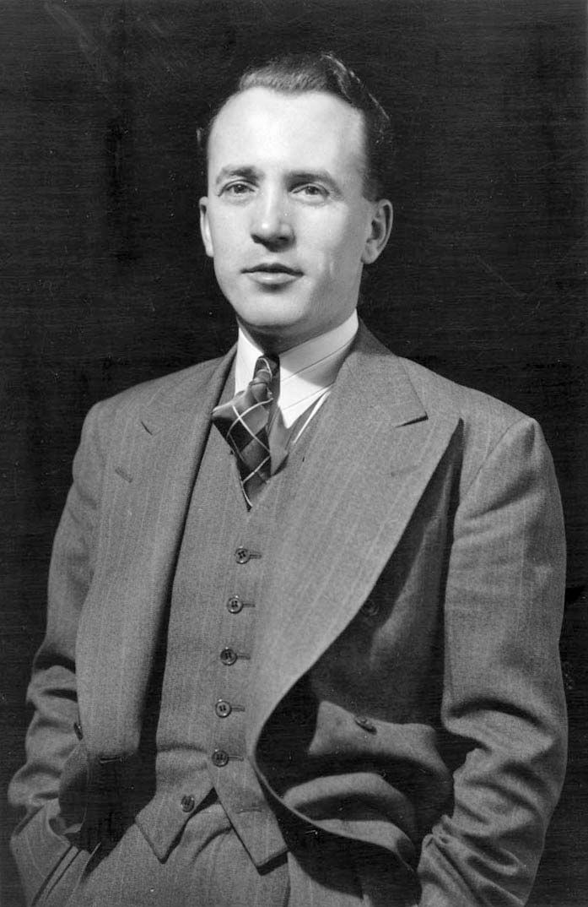

Tommy Douglas
|
Tommy Douglas
|
|
|---|---|
|  | |
| Leader of the New Democratic Party | |
| 3 August 1961 – 24 April 1971 | |
| 7th Premier of Saskatchewan | |
| 10 July 1944 – 7 November 1961 | |
| Member of the Canadian Parliament | |
| 10 February 1969 – 22 May 1979 | |
| Personal details | |
| Born |
20 October 1904 Camelon, Falkirk, Scotland |
| Died | 24 February 1986
(at 81) Ottawa, Ontario, Canada |
| Political party | CCF (1935–1961) NDP (1961–1986) |
| Education | |
Tommy Douglas was a driving force behind the development of our country's healthcare system. The first program of its kind in North America was launched by his proposal for a universal, pre-paid, and publically supervised healthcare system in Saskatchewan in 1959. The federal government launched a national policy to fund socialised medicine and aid provinces in the transition to a universal system as a result of the Saskatchewan plan.
Early life[edit]
One of Thomas and Annie Douglas' three children, Thomas Clement Douglas was born in Falkirk, Scotland. Tommy Douglas, age 6, had a knee injury prior to their departure from Scotland. He developed osteomyelitis, a severe infection of the bone, because the wound didn't heal. Once the family had relocated to Winnipeg, his osteomyelitis continued to flare up. His right leg would need to be amputated.
Thankfully, a renowned orthopaedic surgeon named Dr. R.J. Smith took an interest in his case and offered to operate on Douglas for nothing in exchange for his parents allowing medical students to watch the procedure. The procedure was successful, and Douglas was later convinced that all Canadians should have access to high-quality healthcare regardless of their socioeconomic status.
Premier of Saskatchewan[edit]

Tommy Douglas left his position as a federal representative in 1944 to run in the Saskatchewan general election. He became a representative of what the socialist alternative promised during his years as the province's premier. His administration was creative and effective, and it pioneered many programmes that would later be adopted by other governments, such as the Saskatchewan Power Corporation, as well as the first publicly owned auto insurance company in Canada, Saskatchewan Government Insurance, along with passing the Saskatchewan Bill of Rights in 1947 (before of the Canadian Bill of Rights of 1960), as well as legislation that allowed the unionization of public servants.
Up until 1960, all Saskatchewan provincial elections were won by Douglas and the Saskatchewan CCF by majority five times in a row.
Tommy Douglas resigned as premier of Saskatchewan in 1961.Medicare[edit]
His childhood injury never completely left him and was a constant reminder of the need for medical care.
Douglas' government was committed to providing Saskatchewan residents with a comprehensive health insurance programme. In Saskatchewan, Medicare was established on July 1st, 1962. It would be the first single-payer, universal medical insurance plan under government control in North America. The entire insurance industry in North America and the medical establishment were committed to putting an end to Medicare. They were correct in their fear that it would gain popularity and spread. Within ten years, the Saskatchewan-based medical insurance system had been implemented across the entire country of Canada, and no politician would openly oppose it.Along with Medicare came dental care, eye care and basic prescription coverage.
Today, the term "Medicare" is used to represent the publicly funded healthcare system in Canada. There are 13 provincial and territorial health insurance plans instead of a single federal plan. Under this system, all citizens of Canada have reasonable access to physician and hospital services that are required for their health without having to pay out of pocket.
Saskatchewan Bill of Rights[edit]
Given their belief in the power of British common law, Canada's founders refrained from including a bill of rights in the British North America Act. As in the rest of Canada after World War II, Saskatchewan's postwar laws and practices that had long been intolerant of women and people of colour clashed with new ideas about civil rights.
There are 19 sections in the Saskatchewan Bill of Rights from 1947. It declares that the freedom of expression and association; the right to vote; the right to join a professional organization and union; and the freedom from arbitrary imprisonment are all guaranteed to "every person and every class of person."The Saskatchewan Bill of Rights still has significance because it was the first of its kind in Canada, despite its critics and limited success. A year later, the UN ratified the Universal Declaration of Human Rights, which Canadian John Humphrey co-authored. Thirteen years later, in 1960, the John Diefenbaker government began to construct the Canadian Bill of Rights. Until 1982, when the rights of all Canadian citizens were finally secured, the Charter of Rights and Freedoms was not a part of the Canadian constitution.
Federal NDP leader[edit]

{kind=link}
{kind=link}
{kind=link}
Despite being well-established, the CCF's popularity gradually decreased after the war. In 1956, an effort was made to improve the party's reputation. The Winnipeg Declaration, a new, moderate document, took the place of the Regina Manifesto. But the trend could not be stopped by this. In 1958, the party suffered a crushing defeat; with just 9.5 percent of the vote, only eight MPs were elected.
The CCF and organized labour came together formally to create the NDP. Because of his prominence in Saskatchewan and his reputation as the left's most eloquent public speaker, Douglas was the new party's obvious choice. He had the ability to uplift and encourage party members and could articulate democratic socialism in terms of morals, ethics, and religion.Elections[edit]
The Saskatchewan Doctors' Strike, which was brought on by the Saskatchewan government's implementation of Medicare, was a major factor in Douglas' loss in the 1962 federal election.
But later that year, in the British Columbia riding of Burnaby-Coquitlam, Douglas won a seat in a by-election.
Until his resignation in 1971, when David Lewis took over as party leader, he was the NDP's leader.
Significance[edit]
Tommy Douglas and his colleagues had a great deal of influence on the government, even though they were unable to make their socialist Canada a reality. Initially supported by Douglas and his party, initiatives like Medicare, a national pension plan, and bargaining rights for public employees are now widely accepted in Canada.References[edit]
Bibliography[edit]
- Boyko, J. (2020, September 8). Saskatchewan Bill of Rights. The Canadian Encyclopedia. Retrieved July 13, 2022, from https://www.thecanadianencyclopedia.ca/en/article/saskatchewan-bill-of-rights
- Brown, L., & Taylor, D. (2012). The birth of Medicare – Canadian Dimension. Canadian Dimension. Retrieved July 13, 2022, from https://canadiandimension.com/articles/view/the-birth-of-medicare
- Canadian Medical Hall of Fame. (n.d.). The Honourable Thomas Douglas | CMHF. Canadian Medical Hall of Fame. Retrieved July 13, 2022, from https://cdnmedhall.ca/laureates/thomasdouglas
- de Bruin, T. (2019, June 7). Tommy Douglas. The Canadian Encyclopedia. Retrieved July 13, 2022, from https://www.thecanadianencyclopedia.ca/en/article/tommy-douglas
- Government of Canada. (2016, August 22). Canada's health care system. Canada.ca. Retrieved July 13, 2022, from https://www.canada.ca/en/health-canada/services/canada-health-care-system.html
- Hodgetts, J. (2017). Tommy Douglas | Canadian politician | Britannica. Encyclopedia Britannica. Retrieved July 13, 2022, from https://www.britannica.com/biography/Tommy-Douglas
- Morley, J.T. (2021, March 26). Co-operative Commonwealth Federation (CCF). The Canadian Encyclopedia. Retrieved July 13, 2022, from https://www.thecanadianencyclopedia.ca/en/article/co-operative-commonwealth-federation
- Reid, D. (n.d.). Tommy Douglas. Historic UK. Retrieved July 13, 2022, from https://www.historic-uk.com/HistoryUK/HistoryofScotland/Tommy-Douglas/
- 1904 births
- 1986 deaths
- Scottish military personnel
- The Canadian Grenadier Guards soldiers
- Canadian Army personnel of World War II
- 20th-century Canadian Baptist ministers
- Canadian eugenicists
- Brandon University alumni
- British emigrants to Canada
- Canadian socialists
- Canadian Christian socialists
- Baptist socialists
- Canadian anti-poverty activists
- Co-operative Commonwealth Federation MPs
- 20th-century Canadian politicians
- Companions of the Order of Canada
- Leaders of the Saskatchewan CCF/NDP
- McMaster University alumni
- Members of the House of Commons of Canada from British Columbia
- Members of the House of Commons of Canada from Saskatchewan
- Members of the Queen's Privy Council for Canada
- Members of the Saskatchewan Order of Merit
- NDP and CCF leaders
- New Democratic Party MPs
- People from Falkirk
- Politicians from Brandon, Manitoba
- Politicians from Winnipeg
- Premiers of Saskatchewan
- Saskatchewan Co-operative Commonwealth Federation MLAs
- Scottish Christian socialists
- Scottish emigrants to Canada
- Deaths from cancer in Ontario
- Typesetters
- Royal Canadian Geographical Society fellows
- Persons of National Historic Significance (Canada)
- Burials at Beechwood Cemetery (Ottawa)